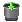

Название
Голосование — Раздел голосований для сайта
О модуле
| Тип | Пользовательский |
| Можно создать копий | Сколько угодно |
| Присутствует по умолчанию | Нет |
| Можно удалять | Да |

С помощью этого модуля можно создавать голосования на сайте. Голосование позволяет выяснить общественное мнение по определенному вопросу среди посетителей сайта. Голосование представляет собой форму, в которой посетителю задается вопрос и предлагается несколько вариантов ответа на него.
Для данного модуля доступен плагин, позволяющий отображать голосования на нужных страницах сайта в правой или в левой колонке.
Общие действия для страницы голосований
- →
Создать новое голосование, указав его свойства.
- →
Изменить общие свойства голосований.
Действия над голосованием
 Редактировать
РедактироватьИзменить свойства голосования.
- Завершить
Завершить голосование. Результаты голосования будут видны пользователям, но возможности голосовать уже не будет.
-  Удалить
Удалить голосование.
Общие свойства голосований
- Максимальное кол-во вариантов ответа в голосованиях
По умолчанию можно создать четыре варианта ответа на вопрос. С помощью этой опции максимальное число вариантов ответа может варьироваться от двух до тридцати.
- Отображать даты голосований
Возможные варианты: не отображать, только дата начала, только дата окончания, дата начала и дата окончания.
Свойства голосования
- Название
Заголовок голосования, как правило, вопрос, на который предлагается ответить.
- Дата начала
Дата начала голосования. До этой даты голосование в списке отображатьсяне будет.
- Бесконечно
Если установлен этот флажок, голосование будет продолжаться пока оно не будет явно завершено администратором.
- Дата окончания
Дата окончания голосования, в начале этого дня голосование будет автоматически завершено.
- Варианты ответа
Список вариантов ответа при голосовании. Указывается по одному варианту на строку. После начала голосования варианты изменить нельзя, поэтому это поле для активных голосований не отображается.